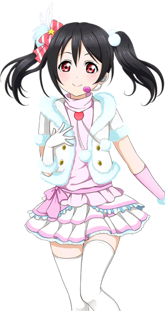
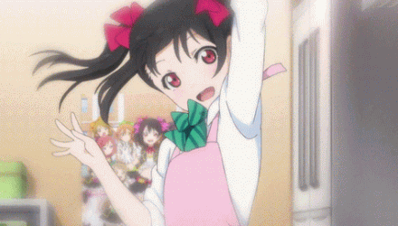

矢泽 妮可
————Nico Yazawa———
| 中文名 | 矢泽妮可 | 就读学校 | 音乃木坂学院 |
| 外文名 | 矢澤にこ (やざわ にこ) |
年 级 | 高中三年级（已毕业） |
| 别 称 | 小香香、妮可酱、妮可、 矢泽日香（中方官译） |
所属团体 | μ's、BiBi |
| 配 音 | 徳井青空 | 擅长科目 | 世界史、数学 |
| 生 日 | 7月22日（巨蟹座） | 擅长料理 | 芝士汉堡肉饼 |
| 年 龄 | 17岁 | 儿时梦想 | 偶像 |
| 性 别 | 女 | 属 性 | 小恶魔、傲娇 |
| 身 高 | 154cm | 魅力点 | 雪白的肌肤 |
| 萌点 | 笨蛋、颜艺、恶意卖萌、 双马尾、小恶魔系、姐姐 |
口头禅 | nico nico ni~ (妮可妮可妮~) |
| 三 围 | B74(实际只有71)/W57/H79 | 应援色 | 粉色 |
- 
角色背景
17岁，高中三年级。以偶像为目标日夜刻苦钻研，真真正正的偶像宅，不擅长唱歌。作为对偶像知识了解丰富的前辈而时常以一副很了不起的姿态与穗乃果她们接触，但是在这方面意外失败也很多的笨手笨脚的孩子。
曾经为了想当μ's的Leader做了很多准备，但都是以失败告终！（一旦有损人利己的想法出现，脸上就会类似黑化的表情！）
虽然是高中三年级但外貌上看却像是穗乃果他们的后辈，还曾被东条希称为是μ‘s的吉祥物。同时性格上也十分孩子气，有时的动作行为完全和本身年龄不符，但是也因为她开朗的个性和不经挑逗的有趣反应而和μ’s的每一个人相处都很融洽。经常和高坂穗乃果、星空凛一同被称为“夏日笑容笨蛋三人组”。
认为偶像是“让观众绽放笑容”的工作，动画中是偶像研究社的部长。在高中一年级时成立偶像研究社，但其他成员对此想法认为过于好高骛远而陆续退出。相当关注μ's的行动，认为μ's职业意识不够，因此要求其解散。后因穗乃果等人的行动而加入μ's，成为第七个加入μ's的成员。
毕业时将偶像研究社社长之位传给小泉花阳。
性格特点
性格十分不坦率，有着容易害羞的一面，一开始并不是不想加入μ's，而是因为害羞，因此每次一看到穗乃果等人就一直逃跑。但也因她容易害羞的特点与海未相似，因此才被穗乃果与小鸟发觉，之后便采取了一系列措施来讨好妮可。之后在穗乃果等人的坚持下，妮可也终于答应了穗乃果让她们加入偶像研究部，同时自己也成为了μ's的一员。有着温柔的一面。在妈妈面前会像小孩子一样撒娇，被穗乃果等人看到让她们感到很意外。也有着腹黑的一面，还会时不时地恶意卖萌。
角色生活
平时的兴趣爱好是打扮和研究偶像，特长则是打理头发。喜欢吃糕点，对辣的食物很厌恶。
对于偶像有着强烈的追求，本想进入UTX高中就读，但因为家庭条件而选择音乃木阪学院。平时会去女仆咖啡店打工。对于别人对自己家庭条件的看法很在意，总是避免让大伙儿到自己的家做客，后因为自己发烧大家一起主动到妮可家照顾妮可而放弃这种行为。
本人有着私下更新博客的习惯，用来记录自己平时的生活。后因为自己的博客被大伙儿发现转而由大家一起更新（但是自己又私底下开通了另一个博客更新μ's的小秘密）。
声优的信
niconiconi~ 大銀河宇宙NO.1的偶像妮可！ 我是妮可的第一位粉絲soramaru（空丸）哦。
謝謝你一直為我們帶來元氣， 為了成為偶像，一個人付出了很多呢。 但是遇到了同伴，認識了μ『s的大家後，你改變了很多，變得更有魅力了！ 一直以來我也是一個人懷抱著夢想，所以十分理解這份心情。
你真的很努力！了不起！！妮可好厲害！ 不管是對自己的強大執念，還是對家人的感情，抑或是對μ's成員的感情，我全都明白。 越是了解你的事情，就變得越來越喜歡你。 最最最最最最喜歡妮可了！~ 我有自信比任何人都要喜歡妮可！！
所以得知μ's到此為止是真的非常非常難過。 一想到以後再也見不到妮可，眼淚就停不下來，曾經還在浴室里大哭過。 「既然如此，要是當初沒有相遇就好了「甚至還產生過這樣的想法。 喂喂，這算是戀愛了麼！（笑ww
總之！我就是有這麼喜歡妮可啊！~ 能和妮可相遇真是太好了。 教會了我各種事情，也讓我被許多人所愛。 這一切都是多虧了妮可。謝謝你。 對我來說妮可是非常重要的，特別的人。 從今往後也會一直是你的頭號粉絲哦ww